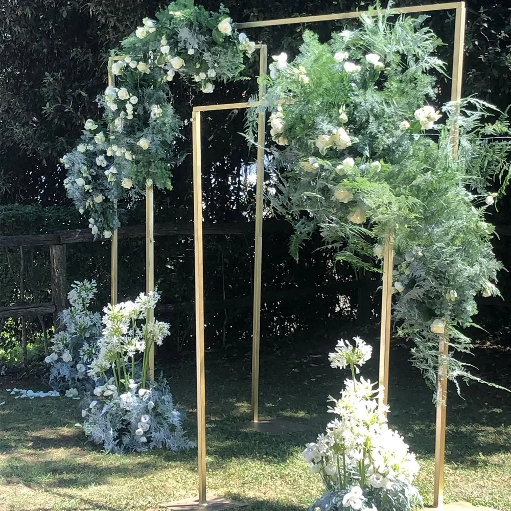
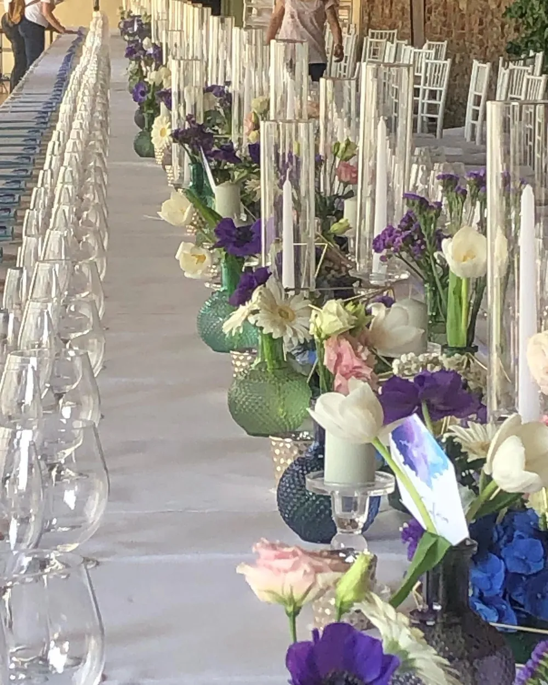
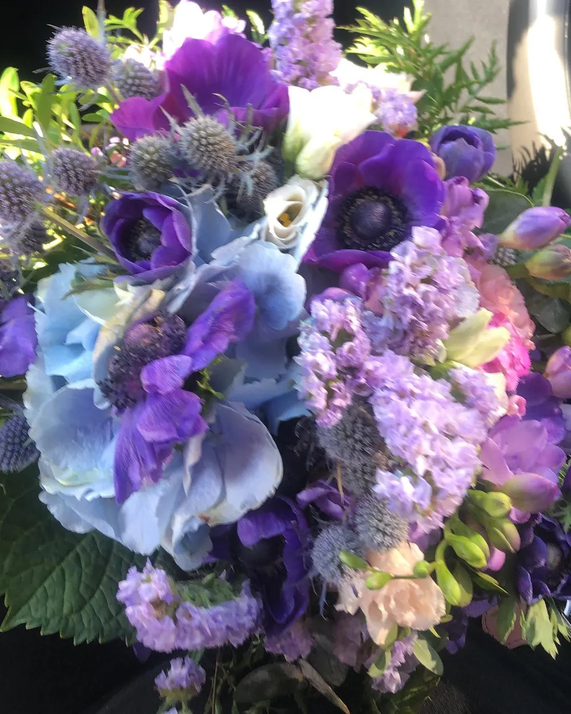
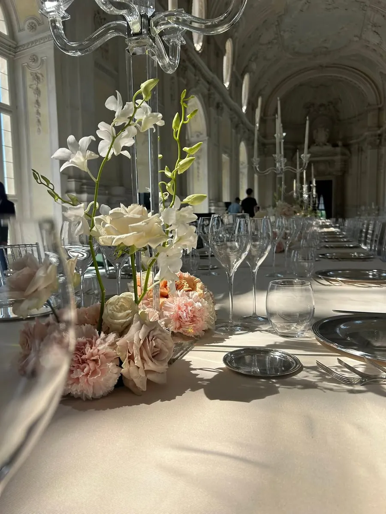
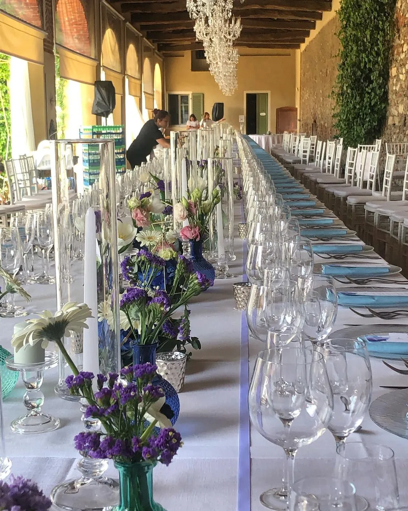
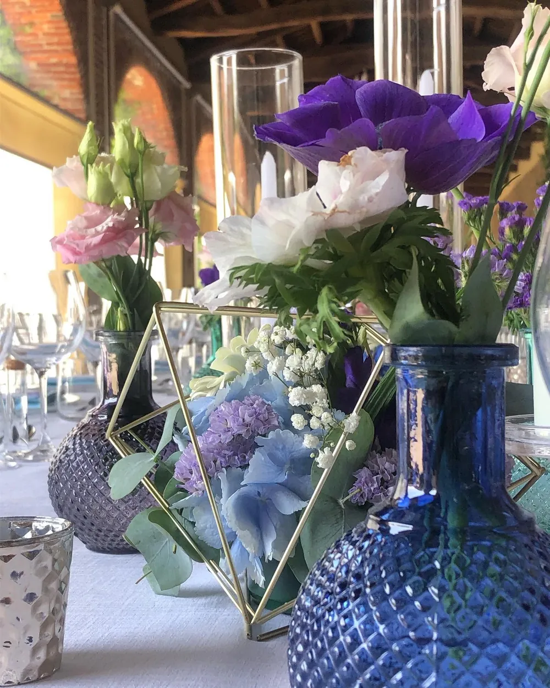
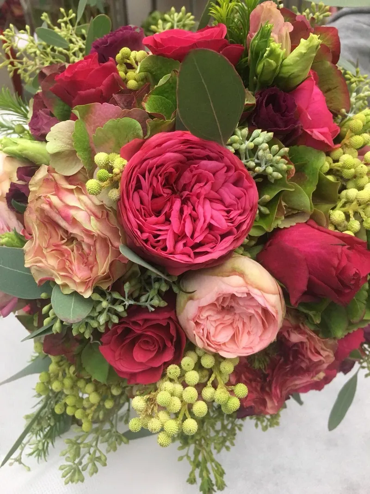
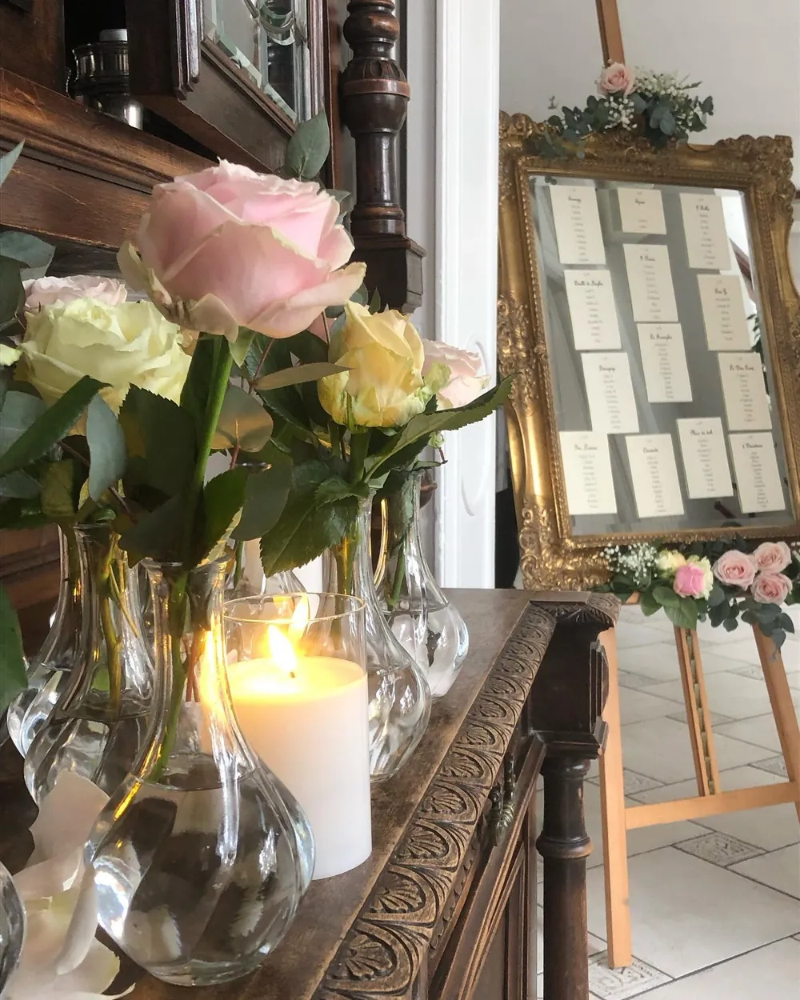

Via Fréjus 133/A
Borgo San Paolo
Lunedì 15:30–19:30
Martedì–sabato 9–19:30

Fioristi di famiglia a Torino, con tre negozi e i fiori di più di 535 matrimoni: dal bouquet alla chiesa, fino all'ultimo tavolo del ricevimento.
4,7 su 199 recensioni e 6 Wedding Awards su Matrimonio.com







Bouquet della sposa e delle damigelle, bracciali e bottoniere, arco, colonne, altare e navata.
Centrotavola, tableau, gazebo, bordo piscina e allestimento della location, anche alla Reggia di Venaria.
Casa degli sposi, scala della sposa, auto, bomboniere, spille, cappellini con fiori e conservazione del bouquet.
Scriveteci almeno due mesi prima delle nozze: i colori e i fiori si scelgono insieme.
Sara è una ragazza fantastica, non solo a livello umano ma anche professionale, si vede che c'è passione, sicuramente dettato anche dal fatto che la sua famiglia è nel settore da molti anni.
Virginia, sposa, su Matrimonio.com
Ha capito perfettamente i miei gusti facendo tutto a tema, bouquet mio e delle damigelle, bracciali, bottoniere e tutto il resto.
Sara R., su Google
I fiori erano davvero belli e la palette che avevamo richiesto è stata rispettata molto bene.
Armaghan, su Matrimonio.com
Le composizioni erano una meraviglia, tutti gli ospiti e i membri dello staff ci hanno fatto i complimenti.
Elena M., su Google
Per un mazzo, una laurea o un pensiero passate dal negozio più vicino. Per le nozze scriveteci a ifioridisara2@gmail.com.
Borgo San Paolo
Lunedì 15:30–19:30
Martedì–sabato 9–19:30
I Fiori di Sara Due, Pozzo Strada
Lunedì 15:30–19:30
Martedì–sabato 9–12:30, 15:30–19:30
Domenica 9–12:30
I Fiori di Sara Tre, Santa Rita
Lunedì 15:30–19:30
Martedì–venerdì 9–12:30, 15:30–19:30
Sabato 9–13, 16–20